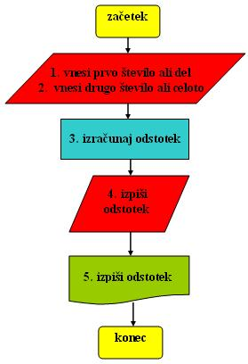
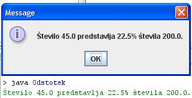

- Podatkovni tip ali tip podatka je ena od lastnosti spremenljivke.
- Pri spremenljivki lahko doloèimo tri lastnosti: njeno ime, vrednost in tip podatka oziroma tip te vrednosti.
- Primer: spremenljivka, ki predstavlja števec zanke, ima lahko ime "i", njena vrednost pa teèe od zaèetne vrednosti, denimo 0, do konène vrednosti, denimo 100. Vrednosti števca i od 1 do 100 so seveda cela števila. Tip podatka za števec "i" je torej celo število ali "integer" oziroma "int".
- Ko deklariramo števec "i" in mu doloèimo tip "int", povemo raèunalniku, da bodo edine veljavne vrednosti števca zgolj in samo cela števila.
- Ko doloèimo v deklaraciji spremenljivke njen podatkovni tip, s tem prepreèimo, da bi shranjevali na mestu pomnilnika, ki je rezervirano za to spremenljivko, vrednost kakšne druge vrste.
- Primer: èe smo števec "i" deklarirali kot celo število "int", raèunalnik ne bo prepoznal in pravilno shranil podatka, èe bomo vnesli za vrednost "i" kakšen znak, niz, ali decimalno število.
- Glede na znaèaj tipov podatkov delimo dve veliki skupini programskih jezikov:
- Jeziki s statiènimi tipi spremenljivk: tip spremenljivke je vezan na njeno ime. Ko spremenljivko enkrat deklariramo, je njen tip ves èas enak; tej spremenljivki lahko prirejamo le vrednosti, katerih podatkovni tip je enak deklariranemu. V to skupino jezikov sodi Java.
- Jeziki z dinamiènimi tipi spremenljivk: tip spremenljivke je vezan na njeno vsakokratno vrednost. Ob deklaraciji spremenljivke ne doloèimo posebej tipa, kar pomeni, da je mogoèe hranjenje vrednosti kateregakoli tipa podatkov. Primer takega jezika je Python.
- Èe vsebuje tip podatka samo eno vrsto veljavnih podatkov, govorimo o enostavnih podatkovnih tipih.
- Primer: v programskem jeziku Java je opredeljen podatkovni tip "int", ki predstavlja cela števila velikosti do 32 bitov oziroma števila velikosti od -2.147.483,648 do 2.147.483.647. Hkrati s tem tipom podatkov so opredeljene tudi osnovne operacije, ki jih lahko izvedemo nad vrednostmi spremenljivk tega podatkovnega tipa.
- Podatkovni tip "int" je torej enostavni podatkovni tip.
- Uporaba podatkovnih tipov v programiranju omogoèa nadzor pravilnosti raèunalniških programov z vidika dostopa do podatkov in upravljanja z njimi.
- Java premore osem enostavnih tipov podatkov: "byte", "short", "int", "long", "float", "double", "boolean" in "char".
- Primer:
- Besedni opis problema in rešitve.
- "Zapiši program, ki bo izraèunal odstotni delež prvega števila glede na drugo število. Program mora najprej pozvati uporabnika k vnosu prvega števila, deleža, in nato še k vnosu števila, ki predstavlja celoto in glede na katerega delež raèunamo": Vprašamo se, kaj vse bomo morali postoriti za rešitev problema in to opišemo v nekaj stavkih. Potek reševanja problema poskusimo premisliti èim bolj natanèno.
- Pozovi uporabnika k vnosu prvega števila, ki predstavlja del oziroma delež.
- Pozovi uporabnika k vnosu drugega števila, ki predstavlja celoto.
- Izraèunaj odstotek ali delež prvega števila (dela) glede na drugo število (celoto). Odstotek izraèunamo tako, da koliènik deljenja dela s celoto pomnožimo s sto.
- V sporoèilnem oknu posreduj izraèunano vrednost.
- Izraèunano vrednost izpiši tudi v interaktivnem oknu delovnega okolja drjava.
- "Zapiši program, ki bo izraèunal odstotni delež prvega števila glede na drugo število. Program mora najprej pozvati uporabnika k vnosu prvega števila, deleža, in nato še k vnosu števila, ki predstavlja celoto in glede na katerega delež raèunamo": Vprašamo se, kaj vse bomo morali postoriti za rešitev problema in to opišemo v nekaj stavkih. Potek reševanja problema poskusimo premisliti èim bolj natanèno.
- Diagram poteka
- "Zapiši program, ki bo izraèunal odstotni delež prvega števila glede na drugo število. Program mora uporabnika najprej pozvati uporabnika k vnosu prvega števila, deleža, in nato še k vnosu števila, ki predstavlja celoto in glede na katerega delež raèunamo": 
- V okolju za pisanje izvorne kode v jeziku Java, za prevajanje in za interaktivno delo zapiši zgornji program "Odstotek". Pomagaj si s sliko.

- Kodo lahko tudi kopiraš iz te datoteke in jo prilepiš v okolje, v katerem pišeš programèke. Pozor: koda, ki jo boš kopiral/a, vsebuje eno, dve, tri ali štiri napake. Èe želiš, da bo program deloval, moraš napake odkriti in jih odpraviti.
- Izvorno kodo shrani pod imenom "ImePriimek45.java". ImePriimek je seveda tvoje lastno ime in priimek.
- Datoteko "ImePriimek45.java" prevedi.
- Prevedeno datoteko zaženi, preveri rezultat v interaktivnem oknu in poklièi profesorja, da vidi rezultat.
- Nariši v zvezek diagram poteka v tej uèni enoti.
1. Zapiši tri lastnosti enostavne spremenljivke.
2. Kaj nam pove tip podatka posamezne enostavne spremenljivke?
3. Kateri dve skupini programskih jezikov loèimo glede na znaèaj tipov podatkov?
4. V katero skupino jezikov sodi Java?
5. Kakšnega znaèaja so tipi podatkov v Javi?
6. Kaj je znaèilnost enostavnih podatkovnih tipov?
7. Naštej enostavne podatkovne tipe, ki jih vsebuje programski jezik Java.
8. Kaj omogoèa uporaba podatkovnih tipov pri programiranju?
9. Kateri aritmetièni operaciji smo uporabili v primeru te uène enote?
10. Naštej vse metode, ki jih zaslediš v primeru te uène enote in jim pripiši njihovo nalogo.
11. Kateri enostavni podatkovni tip smo uporabili v primeru te uène enote?
2. Zapiši od ene do pet kljuènih besed, ki povzemajo vsebino te uène enote.
3. Povezave do dodatnih informacij.
Podatkovni tipi v angleški razlièici Wikipedie.
Spremenljivke v angleški razlièici Wikipedie.
Spletni priroènik proizvajalca programskega okolja Java. To je podjetje Sun.